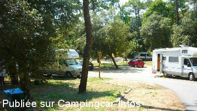
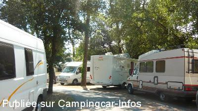
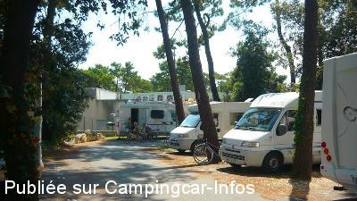
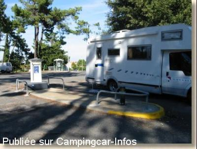
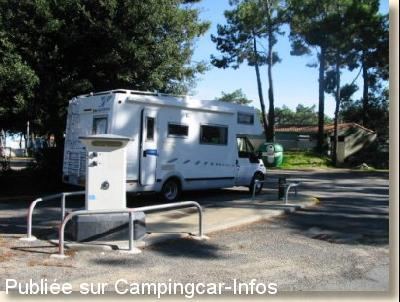

ASN = Aire de services avec stationnement nuit possible de :
ILE D'OLÉRON - LE GRAND VILLAGE PLAGE
(N° 753)
Accès/adresse :
Allée des Pins
17370 LE GRAND VILLAGE PLAGE
17370 LE GRAND VILLAGE PLAGE
Latitude : (Nord) 45.8618° Décimaux ou 45° 51′ 42′′
Longitude : (Ouest) -1.2402° Décimaux ou -1° 14′ 24′′
Tarif : 2013
Stationnement : 6 €
Services : 4 €
Type de borne : EURO-RELAIS
Services :


Autres informations :
Aire communale

Le 18/08/2013 par dany

Le 18/08/2013 par dany

Le 18/08/2013 par dany

Le 05/03/2003 par Patrickmylene16

Le 05/03/2003 par Patrickmylene16
de
Chris
le 16/09/2014 :
Une quinzaine d'emplacements en pente ,sous les pins à 500m de la mer .Aire ,plutôt parking sans aucun charme ,coincée entre un camping et des bâtiments,aucune vue .
Le grand village méritait mieux pour les camping-cars...dommage !
Une quinzaine d'emplacements en pente ,sous les pins à 500m de la mer .Aire ,plutôt parking sans aucun charme ,coincée entre un camping et des bâtiments,aucune vue .
Le grand village méritait mieux pour les camping-cars...dommage !
de
dany
le 18/08/2013 :
je suis passe sur cette aire la semaine du 15 aout 2013
elle est maintenant autorisée la nuit au tarif de 6 euros très bien placée près du marché journalier et des commerces
les services eau ou 220 sont a 4 euros
la bornée tombe en panne deux fois par jour en général!
il y a une quizaine d'emplacements petits et presque tous en pente et assez bruyants
juste a coté il y a un parking gigantesque calme et plat mais réservé aux voitures et pratiquement toujours vide ...mais attention la police agricole en quad veille au grain et verbalise meme si vous avez pris un ticket a 6 euros on les a même vus a 21h30 faire déménager les cc qui s'y étaient installés!!!super accueil a grand village!!! merci monsieur le maire.......
je suis passe sur cette aire la semaine du 15 aout 2013
elle est maintenant autorisée la nuit au tarif de 6 euros très bien placée près du marché journalier et des commerces
les services eau ou 220 sont a 4 euros
la bornée tombe en panne deux fois par jour en général!
il y a une quizaine d'emplacements petits et presque tous en pente et assez bruyants
juste a coté il y a un parking gigantesque calme et plat mais réservé aux voitures et pratiquement toujours vide ...mais attention la police agricole en quad veille au grain et verbalise meme si vous avez pris un ticket a 6 euros on les a même vus a 21h30 faire déménager les cc qui s'y étaient installés!!!super accueil a grand village!!! merci monsieur le maire.......
de
BELLAMY
le 09/02/2011 :
Le dernier arrêté municipal de la commune prévoit que les campings cars doivent stationner sur un terrain de camping du 01/04 au 30/09. IL n'y a pas de réglementation en dehors de cette période
Le dernier arrêté municipal de la commune prévoit que les campings cars doivent stationner sur un terrain de camping du 01/04 au 30/09. IL n'y a pas de réglementation en dehors de cette période
de
le 20/09/2010 :
Bonjour,
Il y a un nouvel arrêté municipal pour la commune de Grand Village Plage (17370- ile d'oleron) . Le stationnement nocturne des campings cars a lieu au Camping Municipal Les Pins du 01/04 au 30/09 et est interdit sur la commune du 01/10 au 31/03.
cordialement
Bénédicte BELLAMY
Office de tourisme
17370 LE GRAND VILLAGE PLAGE
Tel: (00.33) 05 46 47 58 00
Fax: (00.33)05 46 47 42 17
www.legrandvillageplage.fr
www.ile-oleron-marennes.com
Bonjour,
Il y a un nouvel arrêté municipal pour la commune de Grand Village Plage (17370- ile d'oleron) . Le stationnement nocturne des campings cars a lieu au Camping Municipal Les Pins du 01/04 au 30/09 et est interdit sur la commune du 01/10 au 31/03.
cordialement
Bénédicte BELLAMY
Office de tourisme
17370 LE GRAND VILLAGE PLAGE
Tel: (00.33) 05 46 47 58 00
Fax: (00.33)05 46 47 42 17
www.legrandvillageplage.fr
www.ile-oleron-marennes.com
de
Martin
le 13/06/2008 :
10-06-2008.
Sólo el poste y turismos por todos lados de este pequeño espacio.Lugar muy ruidoso y poco agradable.
Limitaciones de altura para entrar en los lugares de sombra. Una pena.
10-06-2008.
Sólo el poste y turismos por todos lados de este pequeño espacio.Lugar muy ruidoso y poco agradable.
Limitaciones de altura para entrar en los lugares de sombra. Una pena.
de
Patrick JEUNESSE
le 27/04/2008 :
Contrairement à ce qui a été annoncé dans certains guides, il est interdit d'y passer la nuit.
Contrairement à ce qui a été annoncé dans certains guides, il est interdit d'y passer la nuit.